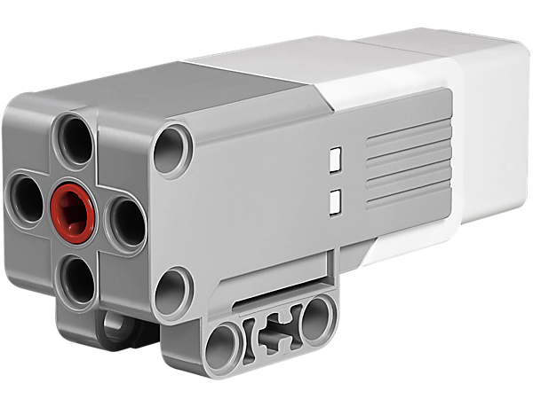
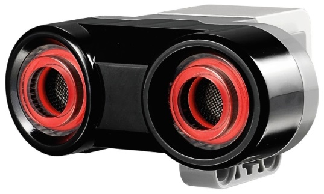

EV3-основни характерристики и икомпоненти¶
Преди да започнем да програмираме Mindstorm Lego EV3 роботи, използвайки MakeCode онлайн платформата, ще се запознаем с основните характеристики на EV3 роботите и интерфейсът на MakeCode.
Основите на LEGO EV3 роботите- хардуер¶
LEGO Mindstorms EV3 комплектът се състои от различни механични и електрически части, от които могат да бъдат сглобени роботи, различни по форма и предназначение.
{kind=link}
Роботът трябва да има сензори, които да събират информация от средата, процесор, който да анализира същата тази информация, механични части, които се движат и изпълняват определена дейност, а също и източник на мощност, който осигурява енергияа за специфични части на робота и му вдъхва живот.
- Тези основни части са:
Централен блок
Енергиен източник
Портове
Сензори
Серво мотори
Централен блок (EV3 Brick)
Напръв поглед, очевидно е, че в самия център на робота има квадратна EV3, където се намира и процесорът. Той е свързан със сензорите, от които получава данни чрез кабели и портове, обработва ги. Според параметрите на създадените от нас програми, той може да изпраща сигнали към механичните части, т.е. моторите, а също и да издава определени звукови предупреждения. Комуникацията между компютъра и централния блок се установява чрез блутут или USB кабел.
Роботът се управлява от две програмируеми AVR микроконтролера. Това са устройства, които допълват процесора и притежават определена периферия, като памет, таймери, A/D преобразуватели, които могат да бъдат програмиране няколко пъти.
Интеграцията се извършва за сметка на паметта в сравнение с обикновения компютърен процесор, което означава, че програмите трябва да се трият често, за да бъде възможно свалянето на нови.
Следната фигура показва централния блок и екрана, през който ще контролираме операциите, извършвани на робта.


За да включим EV3 Brick-а, ще трябва да натиснем бутона в центъра. В червено ще светне квадратната лампичка и началният екран ще се появи.
Щом светлината стане зелена, EV3 Brick-ът е готов. За да изгасим EV3 куба, ще трябва да натиснем копчето на гърба, докато не се появи бутон за изключване на екрана. Натискайки потвърждението и бутона в средата, EV3 кубът ще изгасне. В случай, че изберете бутона Х, ще се завърнете на екрана Run Recent.
Енергиен източник
Като всяка електро-механична конструкция, LEGO Mindstorms EV3 роботът изисква мощност. Стандартния LEGO робот се захранва от 6 AA 1.5V батерии. Електрическите мотори се задействат от 9V, а един от микроконтролерите и някои от интегрираните мрежи-от 5V. Основният микроконтролер се захранва от 3.3V, изходящите портове-от 4.3V и имат защита срещи свръхнатоварване на мрежата.
По-новите версии на робота имат батерии, които се зареждат като мобилни телефони. Енергията може и да дойде от слънчеви панели или от градската мрежа, ако не се движи.
Портове
Вече споменахме, че централният блок получава данни за средата чрез сензори, обработва тази информация, изпраща я чрез съответните сигнали към моторите. Комуникацията с периферните устройства се извършва чез портове.
Според посоката на информационния поток, портовете се делят на входящи и изходящи-по четири порта всеки.

Изходящата част се състои то мотори, а входящата-от сензори. Ако потребителят не промени нещо, създавайки програмата, изходящите портове се делят по подразбиране на:
Порт А за средни мотори
Порт В и С за два комбинирани големи мотора
Порт D за един голям мотор
При същото условие, входящите портове се делят на:
Порт 1 за сензора за докосване
Порт 2 за температурата или жироскопа
Порт 3 за цветовия сензор
Порт 4 за регистрирането на инфрачервени лъчи или ултразвуков сензор
Мотори
Всякакъв вид движение, направен от робот, би бил невъобразим без моторите. Най-често има налични три серво мотора, които полеечават задействащи електрически сигнали през своите портове. Серво моторите се използват за превъзмогване на малки предизвикателства, като отваряне на врата, носене на товари с малки размери на къси разстояния и т.н. зятова те се изполват при направата на малки роботи, роботизирани ръце и други манипулатори. Серво моторите не изискват много енергия, контролират се лесно, може да се разчита на тях.

В основата на серво мотора има еднопосочен мотор с определен брой предавки, чиято опрецаия се основава на принципа на Широчинно импулсна модулация- PWM. Микроконтролерът обработва данните от PWM сигнала-число от 0 до 100 и от 0 до -100, според което се определя процентната продължителност на PWM сигнала.
Положителните числа се отнасят към движение напред, а отрицателните-към движение назад. В допълнение към очевидната разлика в размерите, моторите варират в броя RPM (ротации за минута). По- големият двигател е по-бавен, но осигурява повече сила.
Средния мотор е по-бърз и по-стабилен. Той съдържа тахографи, които осигуряват информация за броя ротации и различни други видове данни.
{kind=link}
С подходящата конструкция и програма, можем да създадем различни механизми за движение, с които роботът може да движи своите колелета и вериги-може да подскача като жаба, като скорпион, да хваща и бута предмети, да ги подрежда на конкретни места.
Сензори
Като хората, и роботите имат нужда от уусет, за да анализират околната си среда.
Стандартният LEGO робот използва четири типа сензори:
Ултразвуков (изглежда като очи), които се използват, за да установят дистанцията между робота и препятствието
Оптичен (цветови) сензор, който реагира на светлинния интензитет в средата, засича стойността на цвета от електромагнитния спектър
Звуков сензор, който реагира на звука; допирен сензор, реагиращ на докосване, т.е. на натискане на копче
Жироскоп, който измерва ротационното движение и ориентацията на робота
Ултразвуков сензор
Това е дигитален сензор, който измерва разстояниетo до предмет.
В допълнение на ултразвуковия приемник, оборудван със специален микрофон, този сензор има и ултразвуков трансмитер. Последният изпраща ултразвукова вълна, която се отразява от препятствието и се насочва към робота. Тази вълна се засича от приемника. Роботът изчислява разстоянието до препятствието, измервайки изминалото време от изпращането на вълната до обратното и приемане след отразяването и.
{kind=link}
Дистанццията може да бъде измерена в инчове или сантиметри. Когато използваме сантиметри, възможната дистанция трябва да бъде между 3 и 250 см, с точност +/- 1см. При измерване в инчове, дистанцията може да бъде от 1 до 99 инча, с точност +/- 0.394 инча. Скоростта на ултразвука е около 300 м/с, а звукувата вълна пътува от трансмитера до препятствието и обратно, изминавайки дистанцията двойно. Процесорът просто използва формулата s=v*t, за да изчисли разстоянието до препятствието.

За по-точно измерване трябва да се вземат предвид и други показатели, като зависимостта на скоростта на ултразвука във въздух от топлината и честотата на излъчения от трансмитера ултразвук. Не е трудно да свържем този механизъм с принципа за ориентация на прилеп-макар и той да има бегло зрение, неоспоримо се ориентира благодарение на своите ехолокатори.
Оптични сензори
Цветовия сензор е дигитален сензор, който засича цвят или светлинан интензитет, които влизат през малкото прозорче отпред на сензора. Той разчита 1 kHz/sec.

Този сензор реагира на светлина или промяна в околната светлина. Досега сензорите бяха черно-бели и можеха да разпознават някои тонове на сивото. Днес, сензорите са по-сложни, разпознават цвят, т.е. различните стойности на електромагнитния спектър. Затова се наричат цветови сензори. Хората (за разлика от животните) имат развито зрение, благодарение на развитите си мозъци, които им позволяват да приемат и обработват голям поток от информация, което дава като резултат разпознаване на картина.
Сензорът може да се използва за:
Разчитане на цветове-роботът разпознава седем цвята: черен, син, зелен, жълт, червен, бял, кафяв и липса на цят. Роботът може да бъде програмиран да разпознава цвета на блокчета и да ги сортира, да казва разпознатите цветове и да спира своята дейност, щом разпознае червено.
Отразяване на светлина-роботът използва лампа, за да осветява с червено и измерва интензитета на отразената от предмета светлина. Той използва скала от 0 (много тъмно) до 100 (много светло). Например, роботът може да бъде програмиран да се движи около бяла повърхност, докато не срещне черна такава.
Отраената светлина (в средата)-роботът измерва силата на светлината, получена от средата, например от лампа. Използва същата скала от т.2. например, роботът може да бъде програмиран да активира аларма при изгрева на слънцето.
Има очевидни ограничения при сензорите, т.е. роботите, следователно, ориентацията в пространството, основавайки се на изображения, съставени от голям брой точки, е трудна. Затова този сензор и комуникацията чрез него са голямо предизвикателство да механиците.
Сензор за докосване

Това е всъщност ключ, който има две условности:
Натиснат (щом роботът докосне предмет)
Ненатиснат (щом сензорът не докосва нищо)
Жироскоп
Жироскопът е дигитален сензор, който засича движение и промени в движението на самия робот. Когато роботът се движи, сензорът ще представи промените в скоростта на завъртането в градуси/сек., като максимумът е 440 градуса/сек.

Така потребителят може да определи дали роботът ще се обръща, но може и да програмира тези завъртания (с точност +/- 3 градуса за всяко 90-градусово завъртане). За да възпроизвежда този сензор с точност резултати, е нужно роботът да застане неподвижен пред да бъде включен, за да се калибрира правилно.
Отделно то гореспоменатото, има други видове сензори в наличност, като звуков, температурен, инфрачервен сензор и др.
TMain Menu на EV3
EV3 Brick-а има четири основни екрана, които ни дават достъп до широка гама от функции на EV3 Brick-а (от нещо просто, като задействане и спиране на програма, до написване на самата програма).
Run Recent
Списък със свалени и действащи програми ще се покаже на този екран. Тази програма, намираща се на върха на списъка, е била използвана последно.
File Navigation
От този екран потребителят има достъп до всички файлове на EV3 Brick-а, включително и файловете, записани на SD картата.
Applications
EV3 Brick-ът идва с четири приложения. Потребителят може отделно да създаде свои, използвайки софтуера на EV3.
Port View
На първия екран на Port View потребителят може да види кои портове имат сензори и свързани мотори, т.е. кои портове са заети. Използвайки EV3 Brick навигационните бутони, потребителят може да провери кои портове са заети и да провери разчетените резултати от сензорите и моторите.
Motor Control
Потребителят може да контролира движението на всеки мотор, свързан към един от четирите изходящи порта.
IR Control (Infrared control)
Контролира движението на всеки мотор, свързан към един от четирите изходящи порта, използвайки “дистанционно управление”- Remote Infrared Beacon и „приемник“ - Infrared Sensor.
Brick Program
EV3 Brick-а идва с програма за програмиране на brick-а по подобие на софтуер, който би бил инсталиран на компютър. По този начин програми могат да бъдат създадени, което е защо е подходящ за начинаещи. Друга причина е възможността на потребителя да създава и тества програми на самия робот без да използа компютър.
Brick Dialog
Разчитането на стойностите на сензорите и моторите-ако те са свързани с brick-а, диаграма ще покаже настоящата информация от един от сензорите или моторите, подобно на осцилоскоп.
Settings
Екранът осигурява достъп до различни основни настройки на EV3 Brick-а, като силата на звука, установяване на блутут/WI-FI връзка, визуални или технически спецификации за самия EV3 Brick. Екранни и звукови настройки, sleep настройки, т.е. за периода на неактивност.
Интерфейс-софтуер¶
За по-предизвикателни приложения, по-напреднали програми и развити среди се представят чудесни възможности за създаване на програми. Спрямо растящата популярност и приложимаст, програмистите са разработили различни уроци на популярни програмни езици, като C#, MatLab и др., специфично за създаване на приложения, които управляват LEGO роботи. Зависи от потребителя да избере дали ще натрупва блокове, или ще напише програма като поредност от инструкции в един от програмните езици.
В тази част от курса ще разгледаме възможностите на платформата за развитие на MakeCode. В този програмен интерфейс можем да създадем прости рограми, като „върви напред за 5 сек. и спри“, или да развихрим въображението си и да създадем по-сложни програми, включвайки различни сензори и мотори.
Като влезем в програмния интерфейс на MakeCode (https://makecode.mindstorms.com/),

, както при повечето програми, забелязваме, че се очаква да създадем нов проект чрез ( ) или да творим вече съществуваща програма. За да на,чем повече за програмния интерфейс на EV3 и как да създадем първата си програма, ще използваме опцията Getting Started или ще гледаме различни видео уроци.
) или да творим вече съществуваща програма. За да на,чем повече за програмния интерфейс на EV3 и как да създадем първата си програма, ще използваме опцията Getting Started или ще гледаме различни видео уроци.
Натискайки или отваряйки съществуваща програма, ще си осигурим достъп до програмен интерфейс, съдържащ блокове, чрез които можем да контролираме роботите.

Всички програмни блокове, използвани за контролиране на робота, се намират в менюто в средата на програмния интерфейс. Програмните блокове са разделени на категории по тип и цулусъобразност. Плюс на този интерфейс е наличието на симулация.
Проекти¶
В следващите проекти ще представим няколко интересни идеи за програмиране на EV3 роботи чрез платформата MakeCode. Всички проекти се изпълняват стъпка по стъпка, за да може всеки да ги изпълни повторно. Всички процедури за конструиране на проекти са разработени-от създаването на програмата до тестването и.